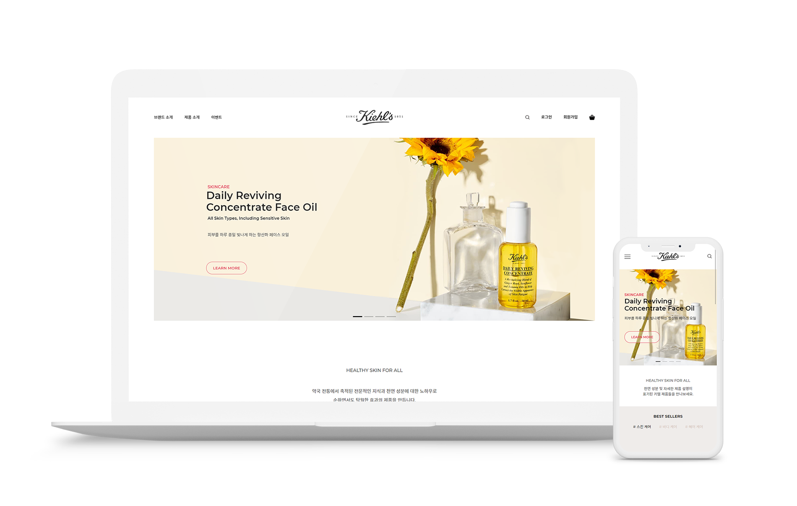

renewal / responsive web / UI / UX
kiehls
renewal project

period - 2020.09.18 ~ 2020.09.28
role - 리디자인 100%, 퍼블리싱 100%
type - 반응형 웹(mobile, pc) 구현

project goal
기존의 전체적으로 좁고 투박한 레이아웃을 넓고 깔끔한 레이아웃으로 재구성하여
사용자가 사이트를 이용하는 데 있어 가독성을 쉽게 확보 가능하며,
모든 사용자가 기기 제약 없이 최적의 화면을 경험할 수 있는 반응형 쇼핑몰 사이트 구현
기존의 좁고 투박한 레이아웃을 넓고 깔끔한
레이아웃으로 재구성하여 사용자가 사이트를
이용하는 데 있어 가독성을 쉽게 확보 가능하며,
모든 사용자가 기기 제약 없이 최적의 화면을
경험할 수 있는 반응형 쇼핑몰 사이트 구현
design guide
keyword
- # 깔끔한
- # 부드러운
- # 편안한
깔끔한 레이아웃과
키엘 제품의 부드러움을 나타냄
color
- #fff
- #c4ad9d
- #de404f
- #000
키엘 제품 디자인에 있는 빨간색을 포인트 컬러로 두고
부드러운 느낌을 주는 갈색 계열의 컬러 사용
font
- NotoSans KR
- Montserrat
키엘 브랜드 정체성 중 하나인
신뢰를 주는 깔끔하고 가독성 좋은 폰트 사용
UI / UX design
- 기존 쇼핑몰은 이미지로만 이루어져 로딩이 오래걸리고 취약계층이 정보를 얻기 어려움
가독성 좋은 깔끔한 폰트 사용과 여유로운 줄간격, 레이아웃 사이 여백 배치를 통해 해결 - 스크롤 시 페이지 상단으로 갈 수 있는 버튼 등장
- PC 화면에서 사용자가 동작 상태를 인지할 수 있도록 마우스 이벤트 발생
publishing
- 웹표준, 접근성을 고려한 HTML 마크업 언어 구축
- W3C Validator 검사 완료
- mobile(375x812), pc(1920x1050) 스크린 사이즈 최적화
- 스크린 사이즈에 따라 레이아웃이 변하는 반응형 웹 구현
- 동적인 요소를 위해 javascript, jQuery swiper 플러그인 사용
- 말줄임 jQuery dotdotdot 플러그인 사용